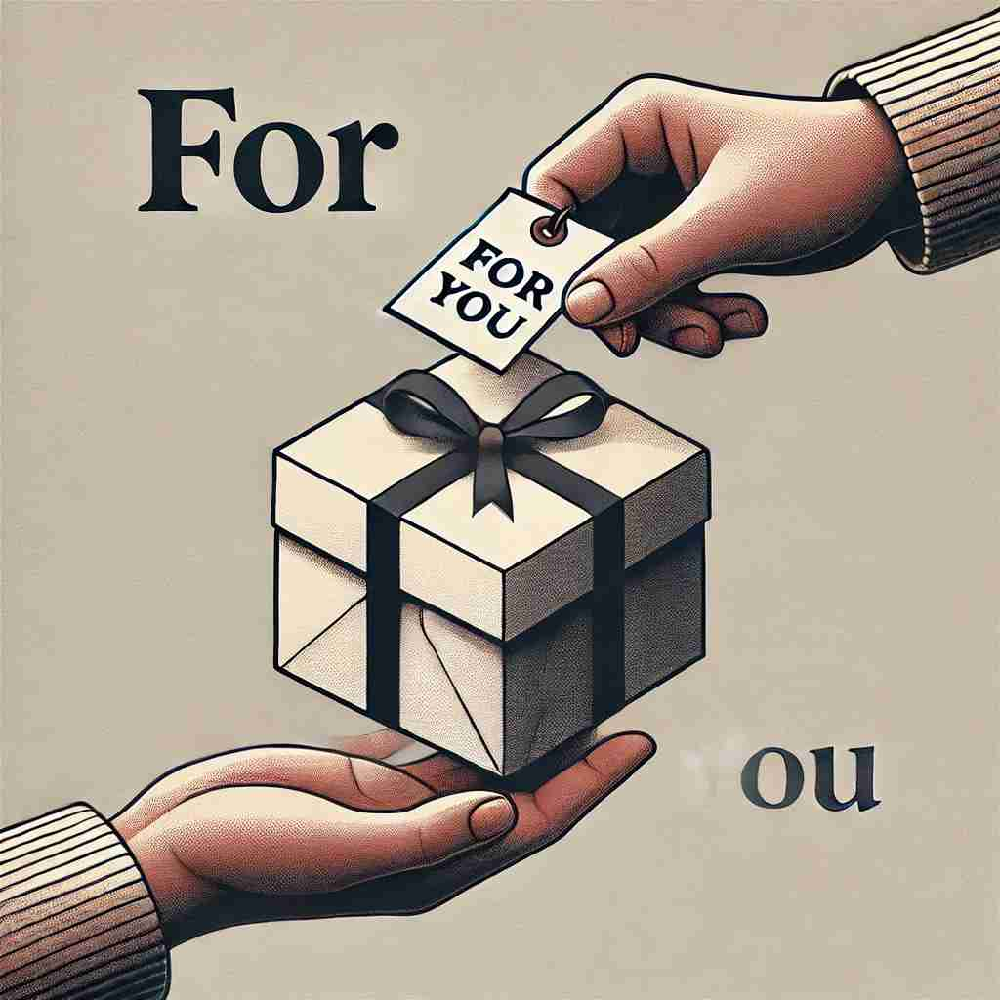

💬 Here is a gift for you on your birthday.

💬 She is reading books for studying.
💬 This is food for the cat.

💬 This gift is for you.
🔈 [fə(r)][strong form fɔ:(r)]
🗝️ prep. used to indicate the purpose or intended recipient of something
🖼️ 在庆祝生日的派对上，妈妈把一个漂亮的礼物递给小女孩，说：'这是给你的生日礼物，for you!'这一刻，女孩满脸笑容，这个场景展示了'for'用于表示某个目的或预定接收者。
🔍 想象'for'是一个箭头，总是指向某个目标、对象或目的。无论是表示支持、时间、代表、交换、原因还是考虑，这个箭头都在指向相应的方向。通过这种'指向性'的概念，你可以更容易理解和记忆'for'的各种用法。
💬 Here is a gift for you on your birthday.
💬 She is reading books for studying.
💬 This is food for the cat.
💬 This gift is for you.
🌳 虽然 'for' 是一个简单的介词，但它来源于古英语 'for', 表示 '为了，因为，代表'。它在古英语中也是复合词和派生词的常用部分。
💡 记忆 'for' 时，可以联想它作为一个方向指引，如 '为了某个目标'。这样可以帮助理解 'for' 在句子中表示目的或原因。
🗝️ prep. in support or favor of
🖼️ 在一个激动人心的选举集会上，人群聚集在一起高喊，挥舞着支持候选人的旗帜，表示他们都是'for'这个候选人的。这个场景展示了'for'用于表示支持或赞成。
💬 Are you for or against the new policy?
❓ 指向支持的目标
🗝️ prep. indicating duration of time
🖼️ 在一个宁静的图书馆里，学生们埋头学习。一位学生抬起头，轻声对他的朋友说：'我们已经学习for三个小时了，要不要休息一下？'这个场景展示了'for'用于表示时间的持续。
💬 We've been friends for ten years.
❓ 指向时间的延续
🗝️ prep. representing or on behalf of
🖼️ 在繁忙的办公室中，秘书在接电话，她微笑着说：'您好，我是for Mr. Smith处理事务的。'这个场景展示了'for'用于表示代表或代替某人。
💬 The lawyer spoke for his client.
❓ 指向代表的对象
🗝️ prep. in exchange for
🖼️ 在古色古香的市场上，商贩将一袋水果递给顾客，顾客递过来一张钞票作为交换。这就是'for'表示交换的含义。
💬 He sold his car for $5000.
❓ 指向交换的目标
🗝️ conj. because of; on account of
🖼️ 在一个多雨的下午，一位司机慢慢停下车，说：'for安全起见，我们在这雨势减弱时再继续行驶。'这个场景展示了'for'用于表示原因。
💬 He was praised for his bravery.
❓ 指向原因或理由
🗝️ prep. considering or taking into account
🖼️ 在餐厅，服务员向顾客建议道：'for您的口味偏好，可能这道菜更适合您。'这里'for'表示考虑或顾及某种因素。
💬 For a beginner, she plays quite well.
❓ 指向考虑的对象